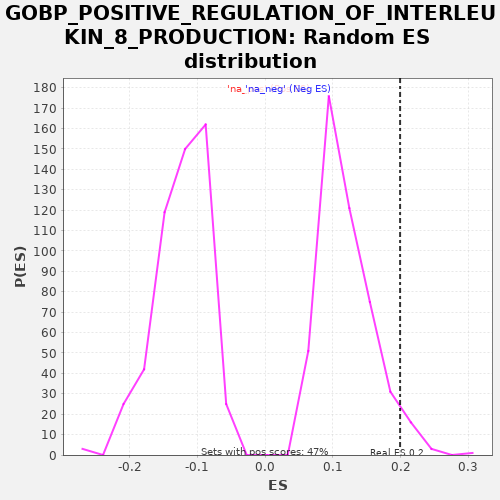

| | | Dataset | A_X_tradeoff |
| Phenotype | NoPhenotypeAvailable |
| Upregulated in class | na_pos |
| GeneSet | GOBP_POSITIVE_REGULATION_OF_INTERLEUKIN_8_PRODUCTION |
| Enrichment Score (ES) | 0.1991342 |
| Normalized Enrichment Score (NES) | 1.6641145 |
| Nominal p-value | 0.042194095 |
| FDR q-value | 0.6442371 |
| FWER p-Value | 1.0 |
Table: GSEA Results Summary
 Fig 1: Enrichment plot: GOBP_POSITIVE_REGULATION_OF_INTERLEUKIN_8_PRODUCTION
Fig 1: Enrichment plot: GOBP_POSITIVE_REGULATION_OF_INTERLEUKIN_8_PRODUCTION
Profile of the Running ES Score & Positions of GeneSet Members on the Rank Ordered List
| SYMBOL | RANK IN GENE LIST | RANK METRIC SCORE | RUNNING ES | CORE ENRICHMENT | | 1 | NLRP10 | 159 | -0.001 | 0.0122 | Yes |
| 2 | PRKD2 | 185 | -0.001 | 0.0313 | Yes |
| 3 | ADIPOQ | 487 | -0.003 | 0.0362 | Yes |
| 4 | TLR3 | 1637 | -0.009 | -0.0026 | Yes |
| 5 | TLR4 | 1923 | -0.011 | 0.0031 | Yes |
| 6 | MYD88 | 2932 | -0.017 | -0.0284 | Yes |
| 7 | LGALS9 | 3070 | -0.018 | -0.0150 | Yes |
| 8 | DDX58 | 4219 | -0.026 | -0.0538 | Yes |
| 9 | ELANE | 4412 | -0.028 | -0.0433 | Yes |
| 10 | PLA2G1B | 4622 | -0.030 | -0.0337 | Yes |
| 11 | HSPA1B | 4751 | -0.031 | -0.0198 | Yes |
| 12 | TLR5 | 5062 | -0.034 | -0.0154 | Yes |
| 13 | HSPA1A | 5302 | -0.037 | -0.0073 | Yes |
| 14 | MAVS | 5400 | -0.038 | 0.0081 | Yes |
| 15 | LAMTOR5 | 6092 | -0.046 | -0.0071 | Yes |
| 16 | TLR8 | 6215 | -0.048 | 0.0070 | Yes |
| 17 | CD2 | 6425 | -0.050 | 0.0166 | Yes |
| 18 | F2RL1 | 6767 | -0.055 | 0.0195 | Yes |
| 19 | TIRAP | 6837 | -0.056 | 0.0363 | Yes |
| 20 | CD74 | 6933 | -0.058 | 0.0518 | Yes |
| 21 | APOA2 | 7077 | -0.059 | 0.0649 | Yes |
| 22 | DDIT3 | 7164 | -0.061 | 0.0809 | Yes |
| 23 | TLR1 | 7289 | -0.062 | 0.0949 | Yes |
| 24 | F3 | 7378 | -0.064 | 0.1108 | Yes |
| 25 | AFAP1L2 | 7512 | -0.066 | 0.1243 | Yes |
| 26 | F2R | 7534 | -0.066 | 0.1436 | Yes |
| 27 | WNT5A | 7637 | -0.067 | 0.1588 | Yes |
| 28 | NOD2 | 7652 | -0.068 | 0.1785 | Yes |
| 29 | HYAL2 | 7957 | -0.072 | 0.1832 | Yes |
| 30 | TNF | 8326 | -0.079 | 0.1847 | Yes |
| 31 | IL6 | 8442 | -0.081 | 0.1991 | Yes |
| 32 | SERPINE1 | 8878 | -0.088 | 0.1971 | No |
| 33 | TLR7 | 10008 | -0.109 | 0.1593 | No |
| 34 | LBP | 10253 | -0.114 | 0.1672 | No |
| 35 | PARK7 | 10747 | -0.125 | 0.1622 | No |
| 36 | HMGB1 | 11364 | -0.141 | 0.1508 | No |
| 37 | IL1B | 11507 | -0.144 | 0.1639 | No |
| 38 | RELA | 11511 | -0.144 | 0.1842 | No |
| 39 | FADD | 12089 | -0.159 | 0.1749 | No |
| 40 | NOD1 | 12771 | -0.178 | 0.1602 | No |
| 41 | TLR2 | 13202 | -0.191 | 0.1584 | No |
| 42 | SYK | 13216 | -0.191 | 0.1782 | No |
| 43 | IL17D | 13671 | -0.207 | 0.1752 | No |
| 44 | RIPK1 | 13772 | -0.209 | 0.1904 | No |
| 45 | PYCARD | 14159 | -0.223 | 0.1909 | No |
| 46 | BCL10 | 14581 | -0.240 | 0.1897 | No |
| 47 | CD14 | 15768 | -0.294 | 0.1489 | No |
| 48 | STAT3 | 16901 | -0.363 | 0.1110 | No |
| 49 | FFAR2 | 18879 | -0.706 | 0.0295 | No |
Table: GSEA details [plain text format]

Fig 2: GOBP_POSITIVE_REGULATION_OF_INTERLEUKIN_8_PRODUCTION: Random ES distribution
Gene set null distribution of ES for GOBP_POSITIVE_REGULATION_OF_INTERLEUKIN_8_PRODUCTION